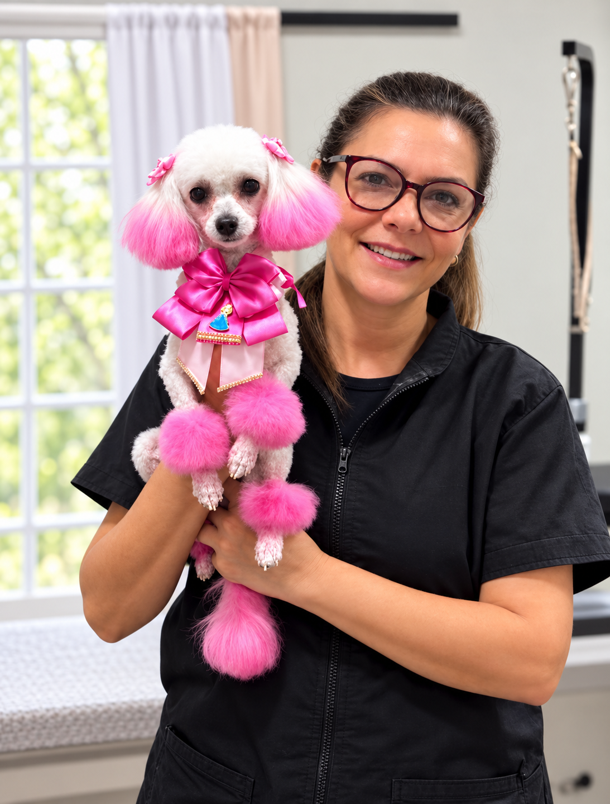
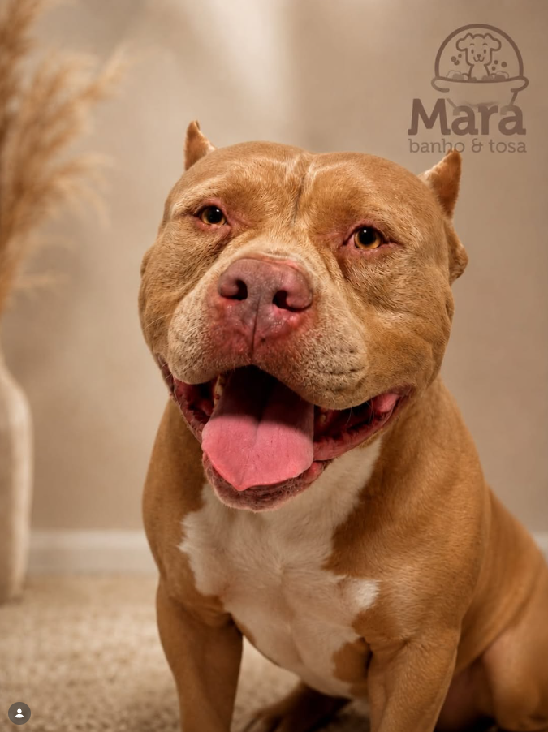

Banho
Limpeza profunda, secagem delicada e uma hidratação que deixa o pelo macio.
Agendar este cuidadoNa Mara, cada banho e cada tosa respeitam o jeitinho do seu pet — do primeiro shampoo ao último laço.
Rotinas tranquilas, produtos selecionados e um toque final que combina com a personalidade dele.
Limpeza profunda, secagem delicada e uma hidratação que deixa o pelo macio.
Agendar este cuidadoUm cuidado completo, sempre respeitando o tempo e o jeitinho do seu pet.
Agendar este cuidadoLaços, penteados e finalização especial para sair pronto para muitos cliques.
Agendar este cuidado
Na Mara, beleza é consequência de um cuidado atento. A gente respeita o tempo de cada pet, percebe seus sinais e entrega aquele detalhe que faz a família sorrir na volta para casa.
Conheça nossa agenda